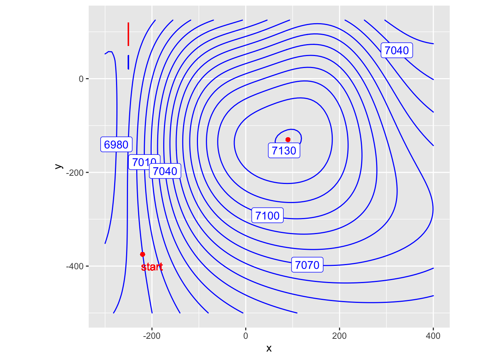

Walking uphill
Preliminaries
physiology
In this project we’ll model the energy consumption of walking uphill. We will parameterize the walk as having distance \(d\) at grade (slope) \(g\). Our goal is to determine whether there is an optimal grade that minimizes energy consumption per altitude gained. You’ll translate your results into a recommendation to the National Park Service for designing challenging (but not too challenging!) hiking paths through a hilly terrain to reach a scenic viewpoint at the top of a hill or the crest of a ridge. Alternatively, you might want to set criteria for rating a given trial: accumulate the energy consumed in following the trail. Finally, you’ll illustrate your findings by drawing an example of a suitable route for a path.
Modeling framework
Figure 1 shows part of a hillside in the form of a contour graph.
A simple terrain near the top of a generic hill. The red vectors show the gradient of the function at the point marked by the root of the vector.
As simple as Figure 1 is, we’re going to simplify it even more in order to set up some terminology. One of the key strategies in calculus is to simplify a more complex picture by zooming in on a small part of the picture. In Figure 1, there is a small blue rectangle. We’re going to zoom in on this, drawing it as Figure 2.

The small blue region in Figure 1 is bounded by two vectors, one drawn with red ink and the other with black. The red vector is the gradient at the corner of the blue region. The black vector runs along the contour. That is, the black and red vectors are orthogonal.
We will set the coordinate system of our model based on that pair of orthogonal vectors. The \(y\) coordinate in Figure 2 corresponds to the steepest uphill direction, the \(x\) coordinate is orthogonal. We will use \(z\) to indicate the elevation of any point.
Distances \(a\) and \(b\) in Figure 2 define a delimited plane. The hiker is going to walk along the diagonal \(d\) of the delimited plane. That will place the hiker at elevation \(c\) relative to the starting point.
The grade of the inclined plane, going in the steepest direction, is \(c/b\), where \(c\) is the height of the top of the inclined plane, and \(b\) is the \(y\)-coordinate of the top. A person desiring to find a shallower grade can walk obliquely, as in path \(d\). The red dashed line shows the route of this path on the \(x,y\)-plane, the the person is also ascending as they go up the path. So, starting with coordinate \((x=0, y=0, z=0)\), the person walking up path d will end up at coordinate \((x=a, y=b, z=c)\). Thus, the length of path d will be \(\sqrt{a^2 + b^2 + c^2}\).
The grade of path d is the vertical distance divided by the horizontal distance (that is, the distance in the \(x,y\)-plane). This distance is \(\sqrt{a^2 + b^2}\), so the grade of path d is \(g_{path} = c / \sqrt{a^2 + b^2}\).
Energy used
The energetics of human locomotion has been studied extensively by exercise physiologists. The literature is substantial, but here are three sources to inform your model.
Alberto Minetti et al., (2002) “Energy cost of walking and running at extreme uphill and downhill slopes” J Appl Physiol 93:1039–1046 link. See their Figure 1 and note that the “m” in the units of the vertical axis refers to meters and not minutes.
Lindsay W. Ludlow and Peter G. Weyand (2016) “Energy expenditure during level human walking: seeking a simple and accurate predictive solution” J Appl Physiol 120: 481–494 link They propose a model of power consumed when walking at velocity \(V\) on a grade \(g\) for a person of height \(h\) that appears to be quite close to the experimental data: \[P = P_\text{resting} + 3.8 + 6.1 \frac{V^2}{h}\ .\] See Figure 3E and F.
The American College of Sports Medicine (ACSM) “Guidelines for Exercise Testing and Prescription” (behind a paywall) gives a straightforward formula which, for compatibility with (i) and (ii) we will translate to the form of metabolic power consumed in walking: \[P = (h + w g_{path}) V\], where \(P\) is power and \(V\) is velocity. The parameters \(h\) and \(w\) have values near \(h=0.1\) and \(w=1.8\). (No units are given for \(h\) and \(w\), although their physical u-dimensionality is easily found from the formula.) Figures 3A and B in Ludlow shows the ACSM model compared to experimentally measured power consumption.
For simplicity, we’ll work through the consequences the ACSM model
- What is the dimension of \(g\)?
walking-uphill-1
- What is the dimension of \(E/d\)?
walking-uphill-2
Applying the geometry
Our goal is to find path grade \(g_{path}\) that will minimize the energy used to ascend a given height. For simplicity, let’s assume that the height is 100 m.
Suppose the path has a grade \(g_{path}\) and reaches a height of 100m. The distance \(d\) in meters travelled along the path will be \(g_{path} d = 100\) meters
- If the distance travelled along the path (solid red line in Figure 1) is \(d\) meters, what is the length of the horizontal trace of the path (the dashed red line in Figure 2), given that the change in height is 100 meters?
walking-uphill-3
- What is the grade of the path when the length of the path \(d\) meters?
walking-uphill-4
According to the ACSM formula, the energy consumed in gaining an altitude of 100m over a path of length \(d\) is \[E(g, d) = (h + v g)d\]
Since we have a formula for the grade as a function of distance, \(g(d)\), we can re-write the ACSM energy formula as a function only of \(d\). Find that formula for \(E(d)\) and then program it as the function Energy() in the sandbox. Then make a plot of Energy(d) and locate the extremum by reading the graph. (You may have to zoom in on the domain. And remember, since the vertical climb is 100 meters, the shortest possible \(d\) is—straight up the cliff!—100 meters.)
It’s a little easier to find the argmin of \(d\) by calculating the derivative of Energy() with respect to d and looking for a zero crossing. Try that.
Extension mini-projects
Do the optimization using the Ludlow formula. Does the optimal grade depend substantially on the person’s height \(h\)?
Minetti et al. give a formula for the energy cost (per meter gain in elevation) of walking uphill at gradient \(g\)
\[C_w(g) \equiv 280.5\ g^5 - 58.7\ g^4 - 76.8\ g^3 + 51.9\ g^2 + 19.6\ g + 2.5\] Perform the optimization using this formula. Note that the energy cost is denominated in terms of “per 1 meter gain” in elevation, so you will need to relate \(g\) and \(d\) to the elevation gain. (Note that the model form is a 5th-order polynomial! Could a piecewise linear model have been used to the same effect? Are there wiggles in the polynomial model.
Interpreting the optimal grade
By solving the minimization problem, you have found the optimal grade. In communicating your result, you should place it in context. For instance …
- The ACSM values of \(h=0.1\) and \(v=1.8\) are estimates. Presumably there is some variation from one person to another as well as uncertainty in the estimate itself.
- The minimum might be sharp or broad. This is a question of how much changing the input value changes the output value.
How to take these matters into account when giving your recommendation for an optimal grade? Here are some ideas.
The ACSM is the American College of Sports Medicine. Presumably the people they studied are athletes, not necessarily typical visitors to a national part.
Do you think a typical park visitor would have larger or smaller \(v\) than an athlete? It’s reasonable to think that \(v\) might be different by a factor of 3 in non-athletes. How does such a change in \(v\) change the argmin grade and the min of the energy?
It may not be important to operate exactly at the argmin. What’s important is that the energy expended not be crazy bad.
One way to think about how acceptable is a grade is to think about how sensitive the output of the energy function is to a change in grade. Pick some percentage change that you regard as hardly likely to be noticed by a park visitor. (Give some justification for your selected percentage, but of course there is no exact right choice.) Translate your percentage into a range of distances \(d\) that is consistent with a change in output less than your percentage. Then convert the range in \(d\) to a range in \(g\).
Communicating your result
Consider three levels of communication:
- You report the argmin grade \(g\) only. This provides the reader of your report with no context. Must the grade be exactly that? Try to avoid such narrow communication.
- You report a range of acceptable grades. This way if the path designer runs into some problem with a particular path, he or she can consider reasonable alternatives.
- You report (2), but you also translate that into terms that will be comfortable for a decision-maker who is not mathematically trained. (You might be surprised how many well-educated people do not assimilate percentages well.)
One way to help people visualize your recommended grade … Pick a few real-world examples of paths, both steep and shallow. For example, there’s the Manitou incline near Colorado Springs as an example of a steep hike. Heartbreak Hill in the Boston Marathon has earned its name. Another example, pick a couple of streets in San Francisco, perhaps one with a cable-car running along it.
Report your results in the form of a table showing your recommendations alongside the real-world examples.
- Draw some example paths on a real terrain. To support you in this task, here is a contour map of some imagined parkland. The contours are spaced 10 meters apart vertically and the axes give (horizontal) distance in meters.
{kind=link}
Translate the upper and lower bounds of your grade interval (as in (2)) into a number of meters you must walk horizontally to go from one contour to the next. For instance, suppose your grade interval translate into 50 meters to 75 meters horizontally. (But use your own grade interval.)
Mark off on a ruler the horizontal distance that must be covered in going from one contour to another. (The red vertical bar in the top left is 50 meters long, the blue is 30 meters.) Then, from the starting point of the path, use that horizontal distance to connect to the next highest contour. Continue on from there, one contour at a time. If you find that the horizontal distance isn’t sufficient to reach the next contour, then your grade will be shallower than the most efficient one. So be it.
After printing out this imagined map use the method in the previous paragraph to draw a path connecting the starting point for the path to the scenic outlook at the top of the hill at a grade that is as close as you can get to the bottom bound on efficient grade that you found. Then draw another path at the top bound for efficient grade. Hand in your maps.
{kind=link}
Warning: All aesthetics have length 1, but the data has 10000 rows.
ℹ Please consider using `annotate()` or provide this layer with data containing
a single row.
All aesthetics have length 1, but the data has 10000 rows.
ℹ Please consider using `annotate()` or provide this layer with data containing
a single row.
All aesthetics have length 1, but the data has 10000 rows.
ℹ Please consider using `annotate()` or provide this layer with data containing
a single row.
All aesthetics have length 1, but the data has 10000 rows.
ℹ Please consider using `annotate()` or provide this layer with data containing
a single row.
All aesthetics have length 1, but the data has 10000 rows.
ℹ Please consider using `annotate()` or provide this layer with data containing
a single row.